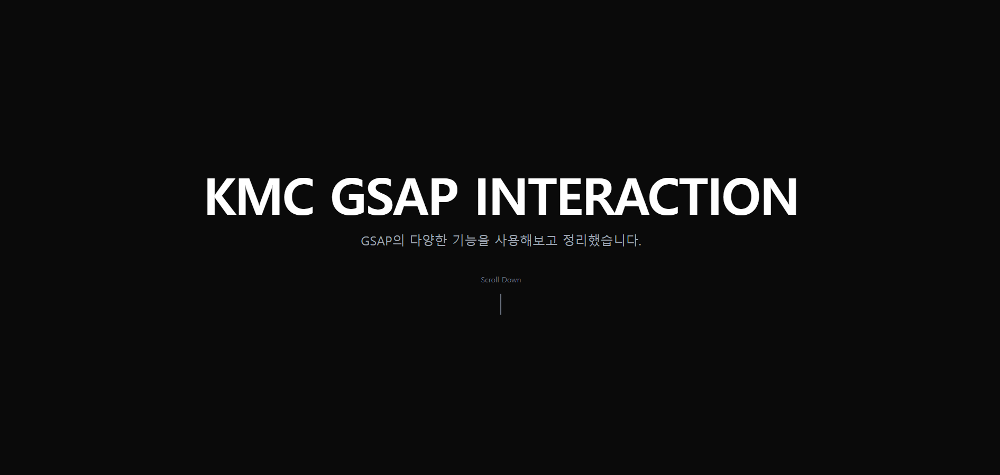

No Image
'">
GSAP Interaction
GSAP
ScrollTrigger
JavaScript
Tailwind CSS
HTML5
Vercel
프로젝트 개요: GSAP(GreenSock Animation Platform)의 다양한 기능을 직접 구현하고 정리한 인터랙션 학습 프로젝트입니다. 실무에서 바로 활용할 수 있는 애니메이션 패턴들을 섹션별로 구성했습니다.
담당 역할: 기획·디자인·개발 전체 (기여도 100%, 1인 작업). ScrollTrigger, Stagger, Parallax, 수평 스크롤, SVG 라인 드로잉, Draggable 등 각 기능을 독립 섹션으로 직접 구현했습니다.
주요 기능: 스크롤 반응형 Stagger 애니메이션, 수평 스크롤 패널(3개), 이미지·텍스트 Parallax 효과, 스크롤 연동 SVG 라인 드로잉, 바운드 제한이 있는 Draggable 요소 (실시간 좌표·회전값 추적).
기술적 특징: gsap.to() / gsap.from() / gsap.fromTo() / Timeline 핵심 메서드 전체 적용. 이징(Easing) 옵션과 커스텀 애니메이션 컨트롤로 세밀한 모션 제어를 구현했습니다.